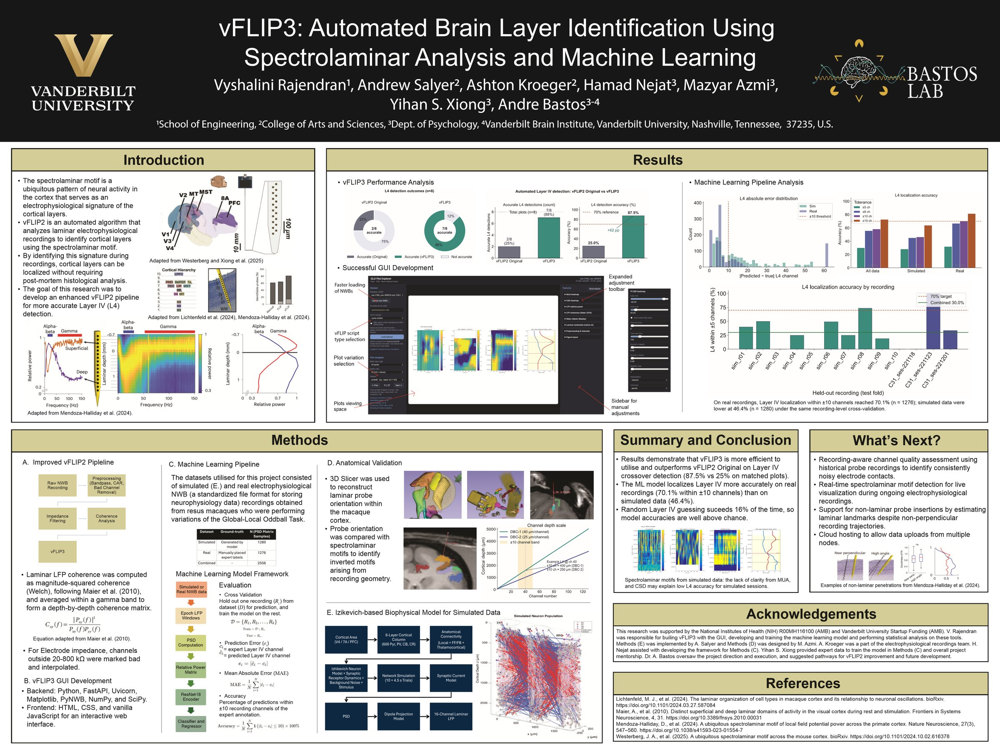

vFLIP3: Automated Brain Layer Identification Using Spectrolaminar Analysis and Machine Learning
Poster, VSTART Summer Research Symposium, 2026

overview
Cortex has a consistent electrical signature across its layers, called the spectrolaminar motif: gamma-band activity is strongest in the superficial layers, alpha/beta activity in the deeper ones, and the two cross near layer IV. vFLIP2 is the lab's algorithm for finding that crossover in laminar recordings so cortical layers can be identified without post-mortem histology. My goal was to build an enhanced pipeline, vFLIP3, that localizes layer IV more accurately, and a machine-learning model that does it automatically.
machine learning
- Trained on 2,556 samples: 1,276 real recordings from rhesus macaques performing the Global-Local Oddball Task, with expert-labeled layer IV, and 1,280 simulated recordings.
- Simulated data comes from an Izhikevich-based biophysical model of a six-layer cortical column, projected to a 16-channel laminar LFP.
- Pipeline: LFP windows → power spectral density → relative power matrix → ResNet-18 encoder → classifier and regressor heads that predict the layer IV channel.
- Evaluated with leave-one-recording-out cross-validation, using mean absolute error and the share of predictions within ±10 channels of the expert annotation.
pipeline and GUI
- Preprocessing: bandpass filtering, common-average referencing and bad-channel removal; electrodes with impedance outside 20–800 kΩ are marked bad and interpolated.
- Magnitude-squared coherence (Welch) in the gamma band, forming a depth-by-depth coherence matrix.
- A researcher-facing GUI with faster NWB loading, plot variations and a sidebar for manual adjustments. Backend: Python, FastAPI, Uvicorn, PyNWB, NumPy, SciPy and Matplotlib. Front end: HTML, CSS and JavaScript.
results
- 87.5%
- layer IV crossover detection on matched real recordings (7 / 8), versus 25% (2 / 8) for the original vFLIP2.
- 70.1%
- of model predictions on real recordings within ±10 channels of expert layer IV labels (n = 1,276).
- 46.4%
- on simulated recordings under the same criterion (n = 1,280). Random guessing succeeds about 16% of the time.
my role
I built vFLIP3 and its GUI, developed and trained the machine-learning model, and ran the statistical analysis. Methods for the simulated data were implemented by A. Salyer, anatomical validation was designed by M. Azmi, A. Kroeger was part of the recording team, H. Nejat helped develop the framework, and Y. S. Xiong provided expert labels and overall project mentorship. Dr. Andre Bastos oversaw the project.
Supported by the National Institutes of Health (R00MH116100) and Vanderbilt startup funding.